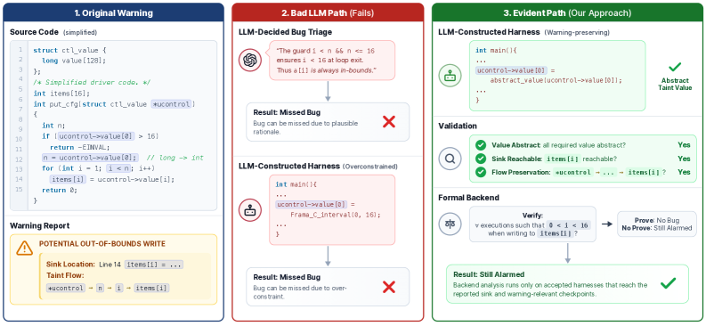

Аннотация
Языковые модели всё чаще берут на себя разбор предупреждений: они рассуждают о коде и решают, способна ли заявленная ошибка проявиться при реальном исполнении. Недавние работы сообщают об обнадёживающих числах. Но удача на испытаниях ещё не превращает гладкое объяснение модели в достаточное основание, чтобы снять предупреждение.
Особенно осторожным следует быть с приговором «бага нет». Чтобы отклонить предупреждение, недостаточно складно объяснить, отчего оно может и не случиться. Нужно доказать, что в рассматриваемом контексте программы заявленное ошибочное состояние попросту недостижимо.
Авторы держатся простого правила: о поведении программы судит формальный анализ, а не модель. Их система Evident отделяет помощь модели от проверки и поручает саму проверку формальному бэкенду. Получив предупреждение, в котором указаны место срабатывания и поток данных, Evident поручает модели лишь одно — собрать для этого предупреждения аналитическую обвязку. Затем обвязку проверяют и только после этого передают бэкенду, и тот выясняет, недостижимо ли ошибочное состояние при построенной обвязке и её допущениях.
Систему испытали на двухстах настоящих предупреждениях в драйверах ядра Android, выданных двумя статическими анализаторами. Из них Evident верно разобрала сто пятьдесят один случай — три четверти; в это число вошёл отсев ста одиннадцати ложных тревог, и при этом не было отброшено ни одного подтверждённого бага. Более того, система заново нашла настоящую уязвимость, которую прежде упустили и автоматическая фильтрация моделью, и ручной разбор.
1. Введение
Статические анализаторы давно служат для поиска багов в больших кодовых базах вроде ядра Linux, но платят за это множеством ложных тревог. Оттого их всё чаще просят разобрать языковую модель. На первый взгляд работа ей под стать: чтобы оценить предупреждение, приходится разобраться в использовании API, в том, какие значения сюда доходят, какие проверки стоят на стороне вызывающего и какие привычки заведены в этом проекте.
Беда в другом. Когда разбор предупреждений целиком отдают модели, само основание приговора «бага нет» становится туманным. Модель умеет складно описать поведение программы, но рассказ на человеческом языке не показывает, как программа исполняется на самом деле.
Найти баг и снять баг — задачи разной природы. Чтобы подтвердить ошибку, довольно единственного исполнения, доходящего до ошибочного состояния: вот оно, предъявите его — и спорить не о чем. Чтобы снять тревогу, нужно обратное: ни одно исполнение не должно достигать ошибочного состояния в рассматриваемом контексте. Привычные оценки лишь сверяют итоговую метку с эталоном, и потому конвейер легко выглядит точным на испытаниях, тихо снимая настоящие уязвимости правдоподобными, но непроверенными рассуждениями.
Авторы держатся простого правила: модель пусть помогает разбирать баги, но о поведении программы судят формальные методы. Применить, однако, точный формальный анализ сразу ко всей большой системе вроде ядра Linux обыкновенно невозможно. Нужен небольшой исполнимый контекст, в котором сохранено ровно столько окружения, чтобы ошибочное состояние можно было проверить.
На этом и стоит Evident: модель строит контекст, но приговора не выносит. Ей поручено представить выбранный контекст как исполнимый кусок программы, а окончательное суждение об этом куске выносит формальный анализ — в данном случае абстрактная интерпретация в Frama-C/Eva (фреймворк анализа C-программ и его плагин абстрактной интерпретации значений).
Такой перенос рождает новую обязанность: приговор по построенной программе должен переноситься на исходную. Поэтому каждую сгенерированную программу Evident проверяет необходимыми условиями. Не прошла проверку — её отбрасывают, а не кладут в основание вердикта.
Статья приносит три вещи: продуманную роль модели в разборе багов, где за ней остаётся восстановление контекста, но отнят приговор; проверку построенных моделью обвязок; и результаты на двухстах предупреждениях в драйверах ядра Android.
2. Мотивация
В оправдание своему подходу авторы приводят настоящий баг в драйвере ядра Android. Его упустили и прежняя фильтрация моделью, и ручной разбор, а между тем у производителя для него уже была заплатка: отрицательное число, пришедшее через управляемую пользователем структуру ucontrol, могло обернуться положительной границей и привести к переполнению.
Этот случай показывает две беды разом. Во-первых, модель способна снять настоящий баг под правдоподобным предлогом, опираясь на мнимую проверку. Во-вторых, даже когда модель лишь собирает обвязку, обвязка выходит негодной, если она восстанавливает заведомо безопасное исполнение, слишком туго стягивая входные данные, которыми распоряжается злоумышленник.
2.1. Правдоподобное снятие может быть ошибочным
На (рис.1) показано предупреждение, которое легко отвергнуть при беглом, местном взгляде. Граница цикла сверяется с размером items, и запись идёт сразу за проверкой. И модель, и человек, читая только этот клочок кода, легко вынесут убедительное «бага нет»: проверка-де стягивает цикл, а значит, тревога о выходе за границы ложна.
Но местное рассуждение упускает тип проверяемого значения. Это не int, а 64-битное поле long в объекте управления, заведённом ALSA (Advanced Linux Sound Architecture — звуковой подсистемой ядра Linux). Отрицательный long спокойно проходит проверку, а после сужается до положительного 32-битного int. Стало быть, проверка вовсе не устанавливает того условия, что нужно для безопасности цикла, и запись в items[i] может выйти за границы.
Отсюда виден и вывод: правдоподобного местного объяснения мало, чтобы снять предупреждение. Проверка и запись стоят рядом, на виду, а вот тип и допустимый предел значения заданы объектом фреймворка, который остался за пределами этого клочка кода.
2.2. От суждения модели к контексту анализа
Этот баг не выходит за рамки анализа программ. Достаточно точный анализ - например, path-sensitive анализ значений (анализ, учитывающий пути исполнения), такой как Frama-C/Eva, или символическое исполнение, такое как KLEE, - может обнаружить ошибочное состояние, если соответствующий код помещён в анализируемый контекст. Локально анализ прост: сохранить управляемое пользователем значение unconstrained (неограниченным) в пределах его типа, пройти проверку, промоделировать сужающее преобразование и проверить границу массива.
Трудность в том, чтобы применить это рассуждение к реальному драйверу ядра Linux. Запуск анализатора напрямую на всём модуле нереалистичен: начиная с регистрации драйвера или инициализации модуля, анализатору пришлось бы исследовать большое пространство состояний, прежде чем достичь точки предупреждения. Предупреждение обычно указывает только место бага и грубый taint-flow (поток заражения) от источника к стоку.
Аналитическая обвязка заполняет этот пробел, предоставляя специфичный для предупреждения контекст, нужный бэкенд-анализатору. Она инициализирует состояние драйвера и фреймворка, нужное для достижения стока, затем вызывает выбранную точку входа, сохраняя зависимые от предупреждения значения неограниченными в пределах их типов. Evident использует LLM как практичный способ восстановить этот контекст из конвенций драйвера и фреймворка, которые дорого моделировать вручную.
2.3. Необходимость валидации обвязки
Даже если LLM не принимает решение о реальности предупреждения, её обвязка всё равно может заставить предупреждение исчезнуть, изменив анализируемый контекст. В мотивирующем примере правдоподобная обвязка может заменить управляемое злоумышленником значение диапазоном, предложенным локальной проверкой, например: ucontrol->value[0] = Frama_C_interval(0, 16);
Если LLM фиксирует вход в [0,16], бэкенд по сути анализирует другой контекст, в котором отрицательные значения long уже удалены. Результат «бага нет» на такой обвязке показал бы лишь, что ошибочное состояние недостижимо после сужения входного домена. Evident поэтому валидирует обвязку перед бэкенд-анализом и отвергает обвязки, которые конкретизируют или слишком ограничивают зависимый от предупреждения вход.
3. Обзор системы
Evident начинает с предупреждения, выданного фронтенд-детектором. Предупреждение указывает источник, сток, ошибочное состояние и taint-flow от источника к стоку. Из этого предупреждения Evident строит меньшую C-программу, которая предоставляет заявленное поведение формальному бэкенд-анализатору - warning-specific analysis harness (специфичной для предупреждения аналитической обвязке). Бэкенд - Frama-C/Eva; фронтенд-детектор не фиксирован, подходит любой детектор, предоставляющий нужные поля предупреждения.
Определение. Ошибочное состояние - это пара (локация, предикат над состоянием программы). Исполнение достигает ошибочного состояния, если оно посещает локацию в состоянии, удовлетворяющем предикату. Предупреждение утверждает, что ошибочное состояние достижимо. Evident снимает предупреждение, устанавливая отрицание: ни одно исполнение не достигает ошибочного состояния.
Область. Evident нацелен на снятие предупреждений в открытых программах: коде, анализируемом без замкнутой доступной точки входа. Такие ситуации возникают в драйверах, библиотеках, обработчиках событий и промежуточных точках входа в больших сервисах. Рассматриваются taint-style предупреждения (предупреждения о потоке заражения), ошибочные состояния которых - локальные предикаты безопасности памяти или целых чисел, включая выход за границы массива и целочисленные переполнения.
Исходы. Evident даёт три результата. Если бэкенд показывает ошибочное состояние недостижимым - «бага нет», предупреждение снимается. Если бэкенд анализирует принятую обвязку, но не показывает недостижимость - предупреждение остаётся тревожным. Если нет принятого бэкенд-результата - случай неразрешён.
| Результат системы | Эталон | Метка оценки |
|---|---|---|
| Бага нет | Недостижимо | Корректно |
| Бага нет | Достижимо | Ложноотрицательный / некорректное снятие |
| Остаётся тревожным | Достижимо | Корректно |
| Остаётся тревожным | Недостижимо | Ложноположительный / консервативная ложная тревога |
| Неразрешён | Любой | Отдельно |
4. Дизайн
Evident просит LLM построить кандидатную обвязку. Затем компилирует и валидирует каждого кандидата перед бэкенд-анализом. Валидация - это пропуск допуска: кандидаты, не прошедшие необходимые требования, отбрасываются, а их диагностика может использоваться для запроса новой обвязки. Когда обвязка принята, бэкенд анализирует ошибочное состояние и выдаёт один из исходов.
4.1. Подготовка входа предупреждения
Evident разбивает сообщённое детектором доказательство на две части: value-flow witness (свидетельство потока значений), фиксирующее вычисления, которые нужно исполнить, и call witness (свидетельство вызовов), задающее точки входа обвязки. Свидетельство вызовов также порождает набор точек входа-кандидатов - суффиксов цепочки вызовов, каждая из которых выбирает разную глубину входа.
4.2. LLM-направляемое построение обвязки
Построитель обвязки - единственный компонент Evident, использующий LLM. Он создаёт C-обвязку для одного суффикса: конструирует аргументы и состояние, нужные для вызова точки входа, сохраняет зависимые от предупреждения значения неограниченными в пределах их C-типов и вызывает вход так, чтобы оставшаяся цепочка вызовов достигла стоковой функции.
Для зависимых от предупреждения значений используется type-preserving abstract-value initialization (инициализация абстрактным значением с сохранением типа): обвязка инициализирует значение абстрактным значением, домен которого выводится из C-типа lvalue, а не из конкретного диапазона, выбранного LLM. LLM выбирает, где ввести абстрактное значение, но не выбирает тип или диапазон.
Построение обвязки следует паттерну tool-augmented coding agents (инструментально-усиленных кодирующих агентов): LLM запрашивает факты исходного кода через код-навигационные инструменты. В реализации слой инструментов направляет запросы в clangd, предоставляющий запросы language server: go-to-definition, ссылки, вызывающие, вызываемые и информацию о типах.
Построение итеративно. После каждой попытки Evident собирает обвязку и запускает доступные проверки. Неудачи возвращаются в LLM как структурированная диагностика, и модель просит исправить обвязку. Если ни один кандидат не проходит в пределах бюджета попыток, случай помечается неразрешённым.
4.3. Валидация обвязки
Валидация проверяет сгенерированную обвязку по четырём вопросам: достигает ли она заявленного стока; сохраняет ли зависимый от предупреждения вход неограниченным в пределах типа; исполняет ли соответствующий фрагмент свидетельства потока значений; и не фиксирует ли другое состояние, влияющее на ошибочное состояние, неоправданными константами.
Аудит абстрактного входа. Проверяет, что зависимые от предупреждения значения введены через type-preserving форму abstract_value, а не конкретными или слишком узкими диапазонами. Аудит отличает структурную коммутацию (указатели, таблицы обратных вызовов) от ограничения значений: числовые и состояния, влияющие на сток, должны оставаться неограниченными.
Достижимость стока и dead-sink. Evident вставляет лог-зонды Frama-C в сток и в более ранние точки пути. Достижимость стока - нормальное условие принятия. Если сток недостижим, Evident принимает это только при более строгом условии dead-sink (мёртвый сток): более ранний хук достигнут, сам сток недостижим, и лёгкий прогон не сообщает тревог до стока.
Достижимость контрольных точек. Evident проверяет, что выбранные точки из свидетельства потока значений достижимы с non-bottom абстрактным состоянием, чтобы убедиться, что обвязка исполняет релевантный предупреждению фрагмент.
Аудит зависимостей. Анализирует состояние, которое может влиять на достижимость стока или проверку ошибочного состояния. Такое состояние должно быть exposed (выявлено) через type-preserving абстрактные значения, если оно не зафиксировано доверенным setup-кодом.
4.4. Бэкенд-анализ
После прохождения валидации Evident анализирует принятую обвязку с Frama-C/Eva. Бэкенд проверяет ошибочное состояние в контексте, закодированном обвязкой. «Бага нет» сообщается, только если бэкенд показывает недостижимость на принятой обвязке. Объяснения LLM, успех валидации, тревоги, unknown-результаты, таймауты и ошибки анализа не являются доказательством отсутствия бага.
5. Реализация
Evident работает с двумя типами источников предупреждений: LLVM-based статический анализ (SUTURE) и SARIF-style SAST-отчёт от детектора на основе CodeQL. Оба адаптера производят одинаковую внутреннюю запись предупреждения.
Для каждого целевого файла ядро сначала собирается для восстановления путей включения, конфигурационных макросов и опций компилятора. Затем Evident препроцессирует файл в .i translation unit (единицу трансляции), которая фиксирует макрорасширенную C-программу, видимую Frama-C/Eva.
Evident предоставляет слой поддержки для генерации обвязок: shim-заголовки, обёрточные пути включения, примитивы инициализации абстрактных значений и модели выбранных API ядра. Shim-слой реализует примитив abstract_value(x), используя тип времени компиляции для выбора соответствующего выражения Frama-C/Eva.
Построение обвязки реализовано как scaffolded, tool-augmented coding task (шаблонная, инструментально-усиленная задача кодирования). Промпт-шаблон превращает вход предупреждения и ограничения дизайна в конкретные требования: модель выбирает точку входа, конструирует объекты, инициализирует зависимые от предупреждения значения через abstract_value и оставляет проверку ошибочного состояния бэкенду. Промпт запрещает LLM принимать аналитические решения.
Шаблон использует staged workflow (пошаговый процесс): на стадии планирования модель не выдаёт файл обвязки, а запрашивает факты кода или пишет план построения; на стадии генерации модель выдаёт C-обвязку по плану. Циклы ремонта сохраняют вход предупреждения фиксированным и добавляют только диагностику компилятора или валидации.
Aggregate zero-initialization (например, memset) отвергается, потому что она присваивает значения полям, которые LLM могла не проверить. Оставление агрегата неинициализированным часто даёт более полезную диагностику: Frama-C/Eva сообщает конкретное неинициализированное поле или некорректный указатель, который обвязка должна скоммутировать.
Извлечение результатов Frama-C/Eva выполняется относительно ожидаемого ошибочного состояния, а не подсчётом всех тревог анализатора. Evident сопоставляет отчёты Eva с заявленным стоком и ошибочным состоянием. Если целевая тревога не найдена, Evident проверяет результат достижимости: «бага нет» сообщается, только если Eva показывает недостижимость.
Объём реализации: около 22,2 KLOC Python, 0,6 KLOC shim-заголовков Frama-C/Linux и 0,3 KLOC YAML-шаблонов промптов.
6. Оценка
Авторы оценивают Evident на реальных предупреждениях драйверов ядра Android, отвечая на четыре исследовательских вопроса:
RQ1 (эффективность): насколько эффективно Evident анализирует реальные предупреждения и что объясняет неразрешённые и некорректные случаи?
RQ2 (чувствительность к модели): как выбор LLM влияет на покрытие и профиль ошибок при одинаковых проверках валидации и правиле решения бэкенда?
RQ3 (сравнение с модельно-решаемой сортировкой): как Evident сравнивается с текущими подходами, где финальный вердикт принимает LLM?
RQ4 (варианты дизайна): как альтернативные варианты построения обвязки, абстрактного входа и валидации влияют на покрытие и профиль ошибок?
6.1. Экспериментальная установка
Датасет: 200 предупреждений из BugLens, включающих предупреждения SUTURE (126) и CodeQL-OOB (74) в драйверах ядра Android. Эталон: 40 реальных багов и 160 не-багов. Метрики: корректность (сумма true positives и true negatives), точность, ложные срабатывания (FP), ложноотрицательные (FN), неразрешённые.
Бейзлайны: Codex с GPT-5.5 (агентский бейзлайн с доступом к дереву ядра) и BugLens с o3-mini и GPT-5.5 (свой retrieval кодового контекста). В основном эксперименте Evident использует GPT-5.5 для построения обвязок и Frama-C 32.0 (Germanium) для формального анализа.
6.2. RQ1: Эффективность
| Источник | Предупр. | Корр. | Точн. | FP | TP | FN | Неразр. |
|---|---|---|---|---|---|---|---|
| SUTURE | 126 | 94 | 0,75 | 25 | 39 | 0 | 7 |
| CodeQL-OOB | 74 | 57 | 0,77 | 3 | 1 | 0 | 14 |
| Итого | 200 | 151 | 0,76 | 28 | 40 | 0 | 21 |
Evident выносит вердикт по 179 из 200 предупреждений. 151 результат корректен (точность 75,5%). 28 некорректных вердиктов - ложные срабатывания: не-баги, которые Evident консервативно оставляет тревожными. В главном эксперименте Evident не даёт ни одного ложноотрицательного.
Остаточные случаи показывают эмпирический профиль ошибок: все некорректные вердикты - ложные срабатывания, ложноотрицательных нет. Это означает, что неудачи Evident консервативны: неподдерживаемые или неточные случаи остаются тревожными или неразрешёнными, а не снимаются.
6.3. RQ2: Чувствительность к модели
| LLM | No-bug TN | No-bug FP | Real-bug TP | Real-bug FN | Неразр. | Точн. |
|---|---|---|---|---|---|---|
| GPT-5.5 | 55 | 25 | 39 | 0 | 7 | 0,75 |
| Claude Sonnet 4.6 | 47 | 24 | 37 | 0 | 18 | 0,67 |
| GPT-5.4 mini | 40 | 18 | 27 | 0 | 41 | 0,53 |
| GLM-5.1 | 50 | 18 | 33 | 0 | 25 | 0,66 |
Выбор модели влияет на корректность и покрытие. GPT-5.5 даёт наивысшую точность (0,75) и меньше всего неразрешённых случаев. Менее способные модели дают меньше корректных вердиктов и больше неразрешённых, но при всех моделях неудачи не превращаются в некорректные «бага нет»: каждая конфигурация имеет ноль ложноотрицательных на этом датасете.
Результат GLM-5.1 (ведущей открытой модели, 40B активных параметров) примечателен: точность 0,66 и ноль ложноотрицательных. Это говорит о том, что Evident не привязан к одной проприетарной фронтирной модели: способная открытая модель может построить достаточно принятых обвязок.
6.4. RQ3: Сравнение с модельно-решаемой сортировкой
| Подход | TP | TN | FP | FN | Неразр. | Точн. |
|---|---|---|---|---|---|---|
| GPT-5.5 + BugLens | 25 | 58 | 29 | 14 | 0 | 0,66 |
| o3-mini + BugLens | 22 | 64 | 23 | 17 | 0 | 0,68 |
| Codex (GPT-5.5 xhigh) | 21 | 55 | 32 | 18 | 0 | 0,60 |
| Evident | 39 | 55 | 25 | 0 | 7 | 0,75 |
Модельно-решаемая фильтрация может пропустить реальные баги даже с сильными моделями и структурированными шаблонами. Бейзлайны дают 14-18 ложноотрицательных: реальные баги иногда снимаются как «бага нет». В Evident LLM-обоснование никогда не достаточно для снятия предупреждения: нужен принятая обвязка и бэкенд-результат, показывающий недостижимость. На том же подмножестве Evident даёт ноль ложноотрицательных.
6.5. RQ4: Варианты дизайна
| Вариант | Корр. | FP | FN | Неразр. | Точн. |
|---|---|---|---|---|---|
| Полный Evident | 94 | 25 | 0 | 7 | 0,75 |
| LLM-решаемый вход | 94 | 11 | 7 | 14 | 0,75 |
| Абстр. значения без валидации | 97 | 18 | 6 | 5 | 0,77 |
| Rule-guided обвязки | 29 | 17 | 0 | 80 | 0,23 |
| Лучший модельно-решаемый | 86 | 23 | 17 | 0 | 0,68 |
Варианты показывают, что aggregate accuracy (общая точность) - не единственная релевантная мера для снятия предупреждений. Упрощённый LLM-решаемый вход может сузить проверяемое пространство входов; удаление валидации может допустить обвязки, не исполняющие заявленное предупреждение; rule-guided построение слишком неполно. Полная конфигурация жертвует небольшой долей общей точности, но устраняет ложноотрицательные, наблюдаемые в вариантах дизайна, сохраняя значительно большее покрытие, чем rule-guided обвязки.
6.6. Кейс-стади: где принципиальное использование помогает
Вложенные типы. Точные типы значений важны, но могут быть не видны в локальном выражении. Разрешение типов вроде snd_ctl_elem_value::id::index требует двух зависимых lookups. На практике модели часто не следуют таким цепочкам до конца и формируют вывод из частичной информации о типе. Evident не делает это разрешение частью внутреннего рассуждения модели: компилятор разрешает полную цепочку определений против анализируемого дерева.
Код-как-видится не равен коду-как-выполняется. Код, видимый модели, не всегда совпадает с исполняемым кодом. В одном случае LLM-бейзлайн рассуждал о цели, ограждённой сложным составным условием, но в анализируемой сборке один конъюнкт был скомпилирован в константу: с отключённым CONFIG_USE_Q6_32CH_SUPPORT ветка не может выполниться. Решающий факт не в функции, которую читает модель. Evident обходит этот пробел: обвязка компилируется против анализируемой конфигурации сборки.
Загрязнение памяти от соседних версий. Модель может помнить правдоподобные факты из другой версии ядра Linux. В некоторых LLM-запусках на старых ядрах Android модель рассуждала так, будто фреймворк-санитизация уже присутствует, хотя в анализируемой версии её нет. Evident заставляет такие допущения материализоваться: вспомянутый санитизер должен появиться либо как код, который существует в анализируемом дереве, либо как ограничение на входы, которое валидация отвергает.
Внутренняя недетерминированность. Подача одного и того же предупреждения не даёт одного и того же решения. Evident не устраняет недетерминизм, но ограничивает его эффект: ошибочная или неполная обвязка оставляет случай неразрешённым, а не даёт некорректное снятие.
7. Обсуждение и ограничения
Граница обоснованности. Evident не утверждает сквозную обоснованность (soundness) для исходного драйвера ядра. Правило решения уже: предупреждение снимается, только если Frama-C/Eva показывает ошибочное состояние недостижимым на принятой обвязке. Валидация даёт необходимые условия допуска, а не доказательство полного сохранения поведения. Модели среды ядра - часть доверенной вычислительной базы Evident, а не LLM-генерируемые артефакты; они появляются как явные C-артефакты, которые можно инспектировать, тестировать и заменять.
Развёртывание с учётом стоимости. Поскольку правило решения «бага нет» фиксировано, выбор модели влияет лишь на то, как часто Evident получает принятую обвязку. Это подсказывает практический путь: использовать более дешёвые или локальные модели для первого прохода, а неразрешённые случаи эскалировать к более сильным моделям.
Ограничения. Оценка ограничена драйверами ядра Android. В менее представленных кодовых базах Evident может строить меньше принятых обвязок. Цель дизайна - не только высокая точность, но и проявление неудач как неразрешённых или тревожных случаев, а не как модельно-решаемых снятий.
8. Родственные работы
Надёжность рассуждений LLM для безопасности: исследования показывают, что LLM остаются ненадёжными как прямые детекторы уязвимостей. Evident разделяет полезность и авторитет: модель помогает восстановить контекст, но результат «бага нет» требует бэкенд-анализа.
LLM-сортировка предупреждений: недавние системы показывают эффективность фильтрации ложных срабатываний, но используют восстановленный контекст для модельно-произведённого вердикта. Evident превращает контекст в обвязку, а решение принимает формальный бэкенд.
Привязка LLM к анализу программ: LLM4PFA использует решение путевых ограничений, LLMDFA - LLM-направляемые резюме потока данных с проверкой путей. Evident применяет эту идею к снятию предупреждений, где LLM-генерируемый контекст сам должен быть проверен перед бэкенд-результатом.
9. Заключение
Анализ программ затем и существует, чтобы анализировать программы. Это почти тавтология: судить о поведении программы должен анализ, а не догадка о коде. Но нынешнее увлечение языковыми моделями легко размывает эту границу. Статья и спрашивает о том, где место модели в разборе багов, чтобы эта простая истина оставалась верной.
Ответ авторов прост: пусть модель строит анализируемое представление программного контекста, который иначе трудно добыть. Evident показывает, что это не одни лишь слова: в настоящих драйверах ядра Android модель вправе взять на себя большую часть работы по сбору контекста, тогда как право судить о поведении программы остаётся за анализом.
Если модель красиво объяснила, почему бага нет, - это ещё не доказательство.
В анализе безопасности и программ опаснее всего не ложная тревога, а преждевременно закрытое предупреждение. Поэтому вывод агента должен подтверждаться артефактом JetBrains IDE: результатом анализа, запуском, тестом, трассировкой или ошибкой компиляции, а не правдоподобным текстом LLM. Evident формулирует тот же принцип для статического анализа: модель помогает построить контекст, но финальный вердикт принимает формальный бэкенд. Veai применяет этот подход к агентной разработке: каждый вывод агента опирается на факты проекта, а не на текст модели.
Перевод подготовлен технической командой Veai на основе arXiv:2606.15122. Первоисточник (англ.): arxiv.org/abs/2606.15122.